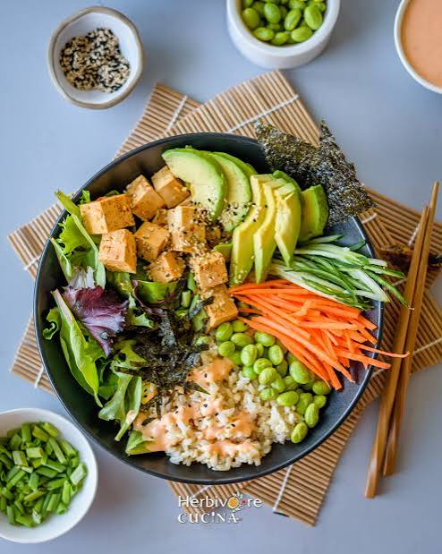

Poké Bowl
Een frisse poké bowl met rijst, zalm en verschillende groenten. Het is een makkelijk gerecht dat je zelf kunt aanpassen met je favoriete ingrediënten.
Ingrediënten
Aantal kommen:
Bereidingswijze
Kook de rijst
Kook de rijst volgens de aanwijzingen op de verpakking. Laat de rijst daarna een beetje afkoelen.
Snijd de groenten
Snijd de komkommer en avocado in stukjes. Schil de wortel en snijd deze in dunne reepjes of rasp hem.
Bereid de zalm
Snijd de zalm in blokjes. Gebruik alleen zalm die geschikt is om rauw te eten en bewaar deze gekoeld tot gebruik. Je kunt de zalm ook bakken als je dat liever hebt.
Verdeel alles over de kommen
Schep de rijst in twee kommen. Verdeel de zalm, komkommer, avocado en wortel over de rijst.
Maak de bowl af
Meng de sojasaus met een beetje limoensap en verdeel dit over de kommen. Strooi er sesamzaad overheen en serveer direct.